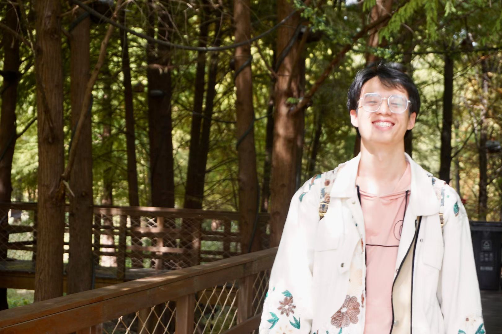
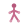
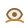
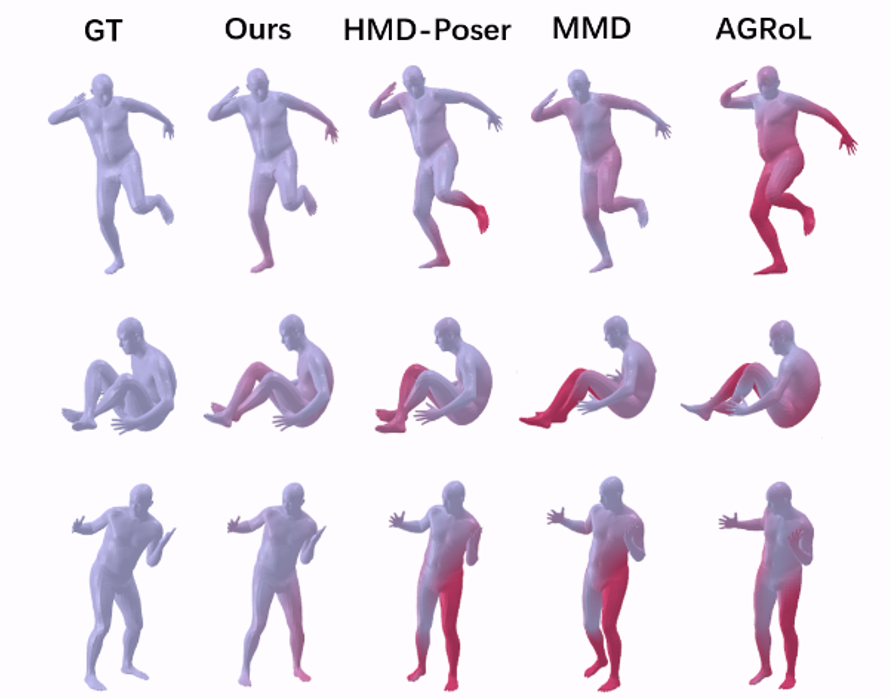
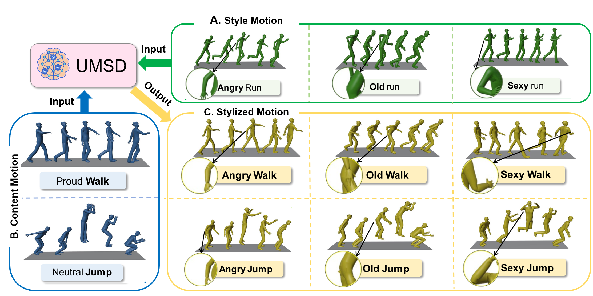
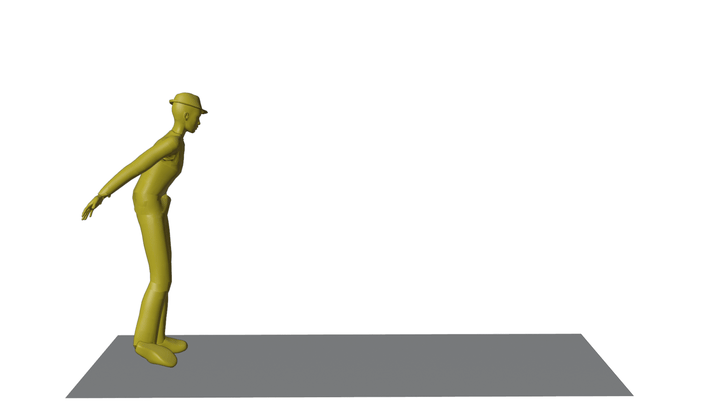
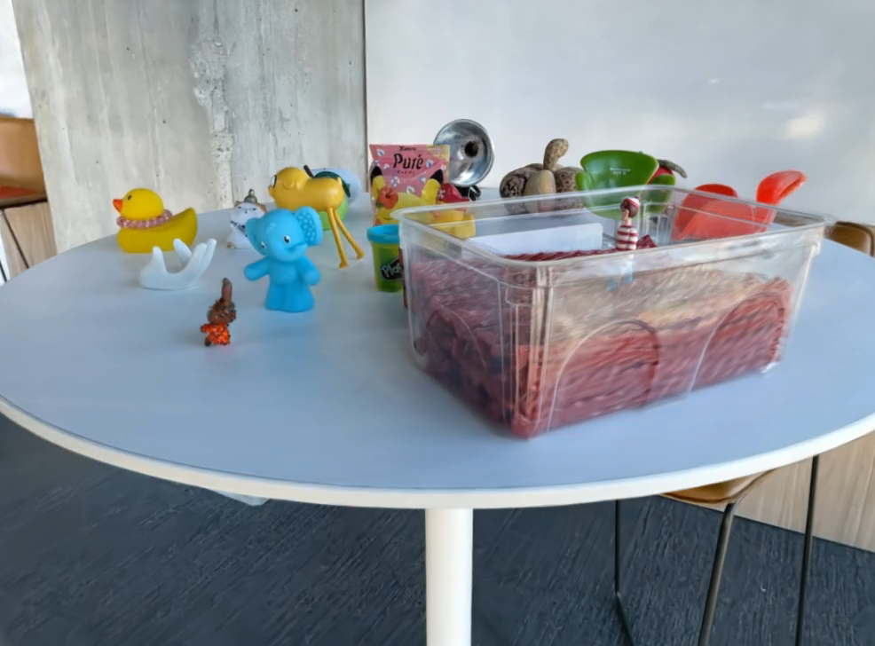

Apr 2026
I have received a PhD offer from the National University of Singapore and will join LinS Lab.

Biography
I am currently a master's student at Fudan University, advised by Prof. Lihua Zhang, and I received my bachelor's degree from Tianjin University.
Research Keywords
Geometry-First Physics-Aware Interaction-Driven
Research Interests
Dynamic Scenes Physical Reasoning Embodied AI
Research Vision I hope to move 3D scene from looking realistic to becoming genuinely useful for Interaction, World Understanding, and Decision-Making.
Apr 2026
I have received a PhD offer from the National University of Singapore and will join LinS Lab.
Jan 20, 2026
Our works
UniMGS
and

Oct 27, 2025
Our work UMSD has been accepted by ACM Multimedia 2025 🎉
Jun 30, 2025
Our work

Selected publications and recent projects.

AAAI 2026
A unified framework for rasterizing mesh and 3DGS in a single-pass anti-aliased pipeline with proxy-based deformation for dynamic scene generation and editing.

AAAI 2026
A kinematics-guided state space model for full-body motion tracking from sparse signals, designed to improve efficiency and richer spatiotemporal representation learning.


ACM MM 2025
A unified Mamba-based diffusion framework for motion style transfer, enabling stronger content-style interaction across both short and long sequences.

ICMR 2025
A physics-based 3DGS interaction framework that integrates object-level segmentation with simulation to improve deformation realism and rendering consistency in multi-material scenes.